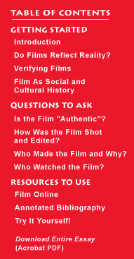

This is an archived copy of History Matters, provided by the Roy Rosenzweig Center for History and New Media. To explore this content in a new interface, visit Who Built America?.

 |
America
at Work/America at Leisure, 1894-1915 This exhibit features 150 motion pictures dealing with work, school, and leisure activities in the United States from 1894 to 1915. The films include footage of the United States Postal Service in 1903, cattle breeding, fire fighters, ice manufacturing, logging, physical education classes in schools, amusement parks, sporting events, and local festivals and parades. Each film is accompanied by a 25-50 word summary of its contents, notes on copyright, media, duration of the film. The American
Variety Stage: Vaudeville and Popular Entertainment, 1870-1920, Variety
Stage Motion Pictures This collection documents the development of vaudeville and other popular entertainments from the 1870s to the 1920s, including 61 movies. The motion pictures, copyrighted in the Paper Print Collection, include animal acts, burlesque, dance, comic sketches, dramatic excerpts, dramatic sketches, physical culture, and tableaux. These provide a "rare animated record" of vaudeville, although they were not filmed during live performances and were adapted to silent film. Coca-Cola
Television Advertisements This site contains highlights of Coca-Cola television advertisements, including 50 commercials, broadcast outtakes, and "experimental footage." There are five examples of stop-motion advertisements from the mid-1950s, 18 experiments with color and lighting for television ads from 1964, and well-known commercials, such as the 1971 "Hilltop" commercial featuring the song "I'd Like to Buy the World a Coke." Inside
an American Factory: Films of the Westinghouse Works, 1904 "Actuality" films (motion pictures produced on flip cards) were also known as mutoscopes. Created by the American Mutoscope and Biograph Company in 1904, these 21 films were intended to showcase the company's operations and feature the Westinghouse Air Brake Company, the Westinghouse Electric and Manufacturing Company, and the Westinghouse Machine Company. They were shown daily in the Westinghouse Auditorium at the Louisiana Purchase Exposition in St. Louis. Internet
Moving Image Archive These films were selected from the Prelinger Archives, a privately held collection of twentieth-century American ephemeral films. The site contains more than 800 high-quality digital video files documenting various aspects of twentieth-century North American culture, society, leisure, history, industry, technology, and landscape. It includes films produced between 1927 and 1987 by and for U.S. corporations, nonprofit organizations, trade associations, community and interest groups, and educational institutions. Some of the films depict ordinary people in normal daily activities, such as working, dishwashing, driving, and learning proper behavior. Viewing these movies requires a DSL or faster connection and, even with a fast connection, many of the movies take several minutes to load. In addition, specific software [available for free through the site] necessary to view the films is available only for PCs. Inventing
Entertainment: The Early Motion Pictures and Sound Recordings of the Edison
Companies Thomas Alva Edison (1847-1931) -- prolific inventor, manufacturer, and businessman -- patented 1,093 inventions, including the phonograph, the kinetograph (a motion picture camera), and the kinetoscope (a motion picture viewer). This site features 341 motion pictures and related materials documenting Thomas Edison's corporate impact on the history of American entertainment. A special page focuses on Edison's contribution to motion picture technology. Origins
of American Animation, 1900-1921 This site traces the development of early American animation through 21 animated films made between 1900 and 1921. The films include several media -- clay, puppet, cut-out animation, and pen drawings -- and indicate the "connection between newspaper comic strips and early animated films." Theodore
Roosevelt: His Life and Times on Film Although not the first president to be filmed for motion pictures, Theodore Roosevelt was the first to have his life chronicled through extensive use of the then new medium. This site offers 104 films depicting events in Roosevelt's life, from the Spanish-American War in 1898 to his death in 1919. The films include scenes of Roosevelt with world figures, politicians, monarchs, friends, and family members and are accompanied by brief captions. Uncle
Tom at the Movies An in-depth site on the cultural importance and social ramifications of Harriet Beecher Stowe's Uncle Tom's Cabin, or Life Among the Lowly. The section entitled Uncle Tom's Cabin on Film includes five of the more than ten film versions of Uncle Tom's Cabin,made between 1903 and 1927, as well as its cultural legacy in film into the 1950s. The films are broken into small pieces for more manageable downloads and viewing times. In addition, a "Screening Room" allows side-by-side viewing of clips from various years.
|
|||
|
|
||||